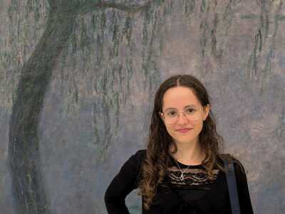

Thaïs Castillo
À propos...

Passionnée par l'art créatif
, je dessine pendant mon temps libre. Lorsque je travaille sur des projets liés au design, comme un site web ou un magazine, j'y prends un grand plaisir. Ainsi, le développement informatique est pour moi un moyen d'exploiter cette créativité. De plus, pour enrichir mon expertise et mon autonomie, je m'exerce en programmation et je reste attentive aux nouvelles technologies disponibles.
Autrement,
j'aime lire des romans
, surtout fantastique, dystopique, et développement personnel, j'adore me lancer dans des
projets manuels
comme la confection de pull en tricot, et je pratique une
activité sportive
assez régulière dans la semaine (course à pieds, renforcement musculaire...).
J'ai de plus
voyagé dans plus d'une dizaine de pays européens
, ce qui a stimulé ma curiosité et élargi mes horizons.
Enfin, étant de
nature organisée
, j'ai toujours aimé planifier et structurer mes projets, qu'ils soient académiques ou personnels.
Hard Skills
J’ai développé
une maîtrise solide du CSS et de l’HTML
, ce qui me permet de créer des sites web structurés et visuellement attrayants. Bien que je n’aie pas encore approfondi
JavaScript
, je connais les bases du langage et je suis prête à l'explorer davantage pour rendre les pages web interactives et dynamiques. En ce qui concerne le langage
Java, mon niveau intermédiaire
me permet de travailler efficacement en programmation orientée objet. J'essaie de régulièrement me ploger dans des projets de mon propre chef, afin d'augmenter mon niveau dans ce langage.
Mon initiation au C et au langage assembleur
m’a permis de comprendre les principes fondamentaux de la programmation bas-niveau. Enfin, j’ai commencé à explorer Python, un langage polyvalent qui offre de nombreuses opportunités dans divers domaines. Ces compétences me permettent d'aborder une grande variété de projets informatiques avec une base technique solide. Enfin, mon école m'a fournit une initiation à l'utilisation de
Linux en ligne de commande.
Langues
J'ai un niveau
B2 en anglais
, presque C1, et mon séjour en Irlande de 15 jours en 2022, a renforcé mes compétences linguistiques. De plus, je possède un
niveau A2 en espagnol.
Soft Skills
-
Persévérance,
car je ne laisserai jamais un projet à l'abandon.
-
Rigueur,
car je n'aime pas faire un travail bâclé ou à moitié fait.
-
Organisation,
car je pense que c'est ainsi que l'on garantit un travail de qualité.
-
Autonomie,
car j'aime consacrer du temps à la découverte de nouvelles choses.
Mes contacts